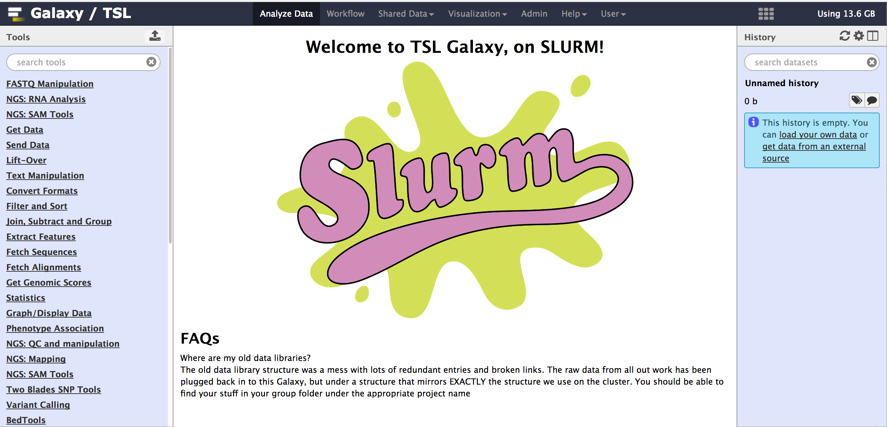
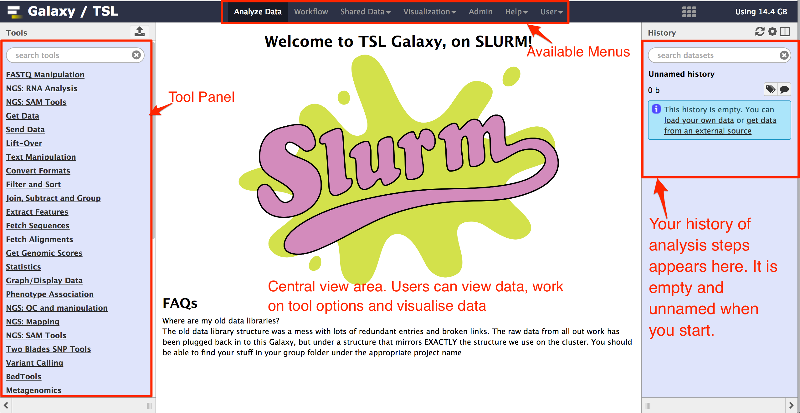

2 Galaxy web interface
2.1 About this chapter
- Questions
- How does Galaxy web interface look?
- What does Galaxy web interface contain?
Objective
- Become familiar with Galaxy web interaface
2.2 Galaxy Web Interface
After successful login, you will see a galaxy web interface. An example of a galaxy web interface is shown below:

Galaxy Web Interface
There are three sections in the galaxy web interface.
- The left column contains links to the downloading, preparation and analysis tools.
- The center column is where the menus and data will appear.
- The right hand column shows the history of analysis steps, allows to view data and results, and more (see figure below).
Following figure shows different layouts of galaxy web interface.

Galaxy Web Interface